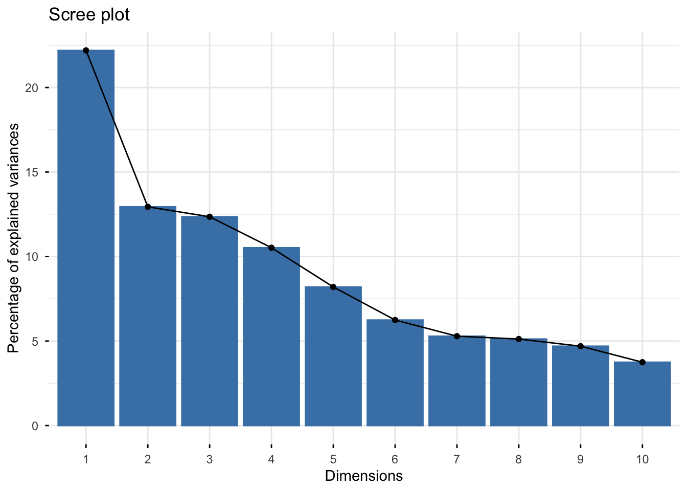
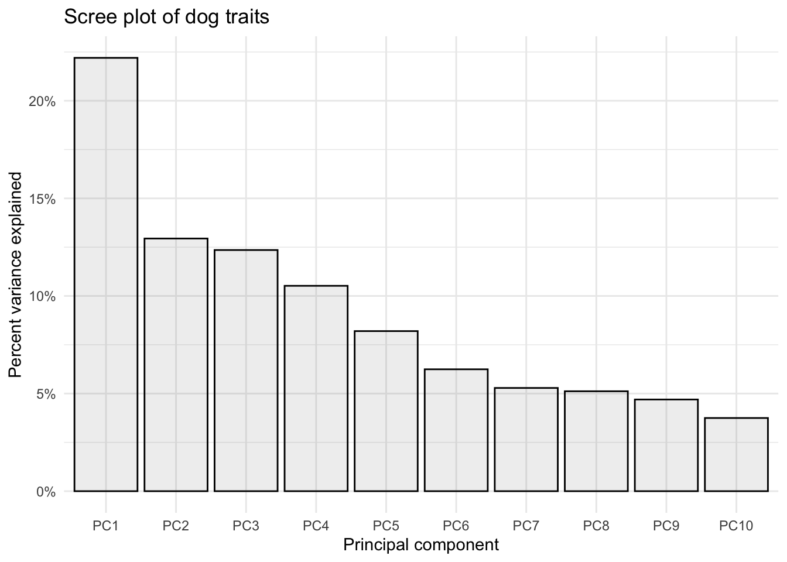
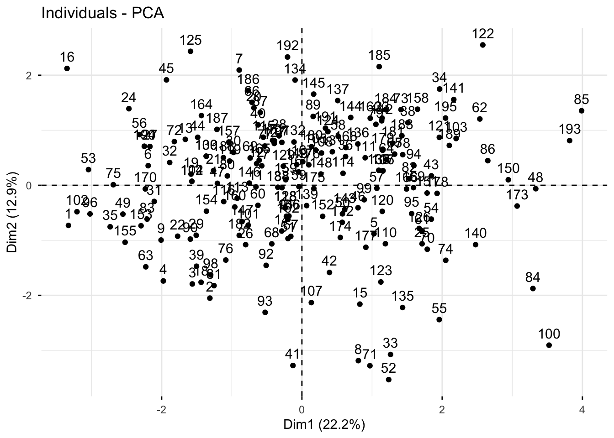
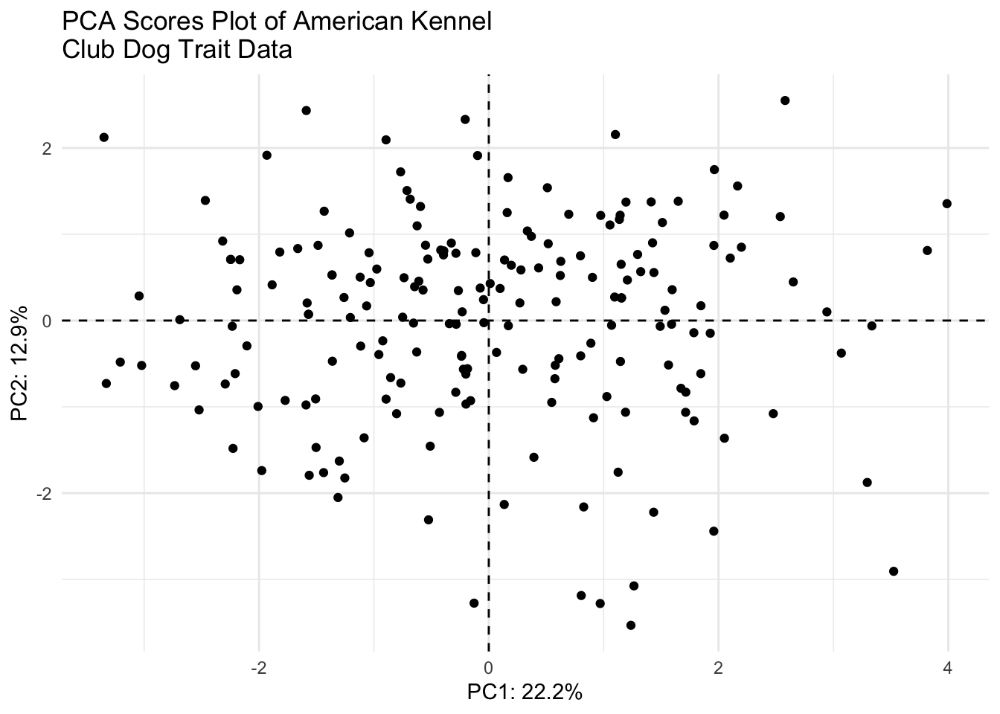
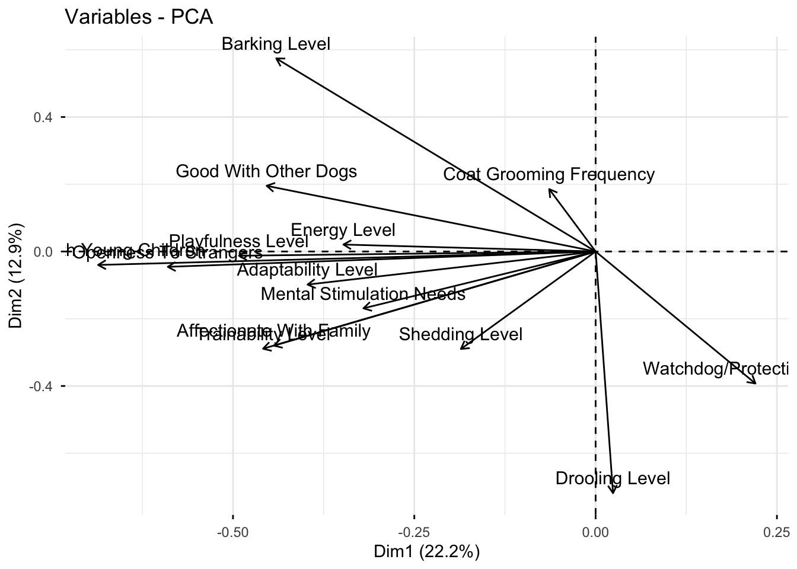
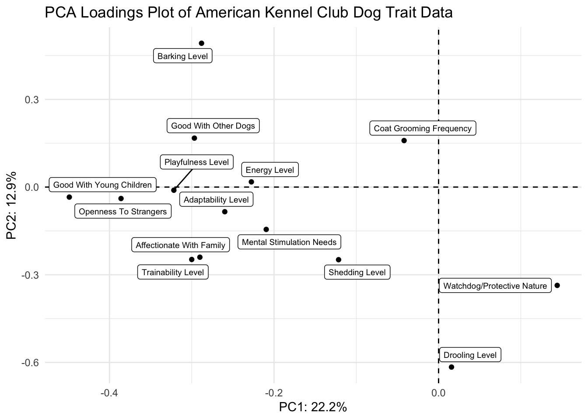
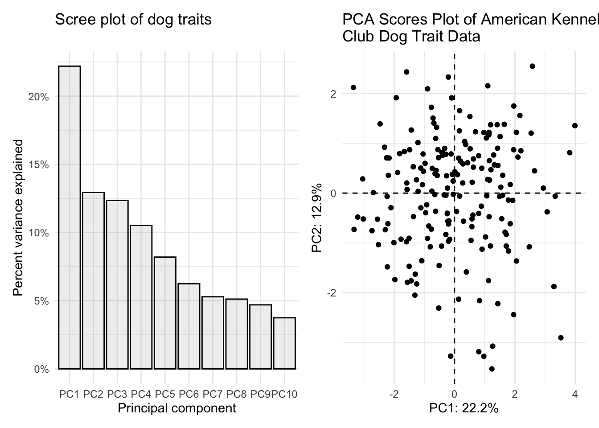
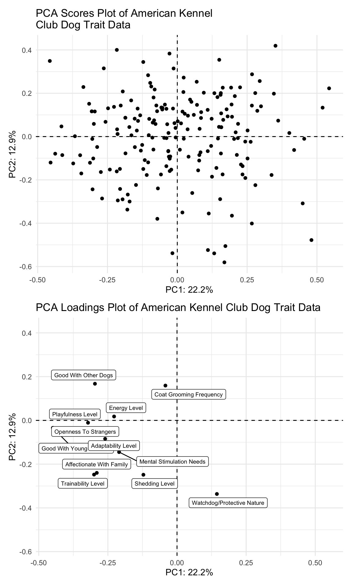

breed_traits <- readr::read_csv('https://raw.githubusercontent.com/jcooperstone/jcooperstone.github.io/main/assignments/modules/module4/data/breed_traits_fixed.csv')
trait_description <- readr::read_csv('https://raw.githubusercontent.com/jcooperstone/jcooperstone.github.io/main/assignments/modules/module4/data/trait_description.csv')
breed_rank_all <- readr::read_csv('https://raw.githubusercontent.com/jcooperstone/jcooperstone.github.io/main/assignments/modules/module4/data/breed_rank_all.csv')Module 4 Assignment Solutions
Introduction
This is your assignment for Module 4 Putting It All Together, focused on the material you learned in the lectures and recitation activities on PCA, Manhattan plots, interactive plots, and the leftovers.
Submission info:
- Please submit this assignment by uploading a knitted .html to Carmen
- Your headers should be logical and your report and code annotated with descriptions of what you’re doing. Starting on this assignment, I will be considering for overall format and readability of your assignment as part of your grade. I am doing this because the format of your report will be considered for your final capstone assignment. This means you should have reasonable headers and header levels, understandable flow between plots and code, and use Markdown language when appropriate.
- Make sure you include the Code Download button so that I can see your code as well
- Customize the YAML and the document so you like how it looks
Remember there are often many ways to reach the same end product. I have showed you many ways in class to achieve a similar end product, you only need to show me one of them. As long as your answer is reasonable, you will get full credit even if its different than what I intended.
This assignment will be due on Tuesday, December 3, 2024, at 11:59pm.
Data
The data we will be using is the same we used in the ggplot102 recitation that includes information about dog breed trait information from the American Kennel Club.
Download the data using the code below. Don’t use the code from week 5 recitation.
For a little hint, here are the packages I used to complete this task. Yours might not be exactly the same.
library(tidyverse)
library(factoextra)
library(glue)
library(patchwork)
library(ggrepel)
library(plotly)
library(gghighlight)1. Principal components analysis (PCA) of American Kennel Club dog bred trait data (6 pts)
Run a PCA on breed_traits for all of the numeric data present in that dataset. Create the following plots and make them of publication quality:
- A scree plot
- A scores plot
- A loadings plot
- A two panel plot that has the scores plot and the scree plot together
# create a df that has only the quantitative traits
breed_traits_quant <- breed_traits |>
select(-`Coat Type`, -`Coat Length`)
# run PCA
# no scaling (because all are on the same scale)
# centering is a good idea
trait_pca <- prcomp(breed_traits_quant[,-1],
scale = FALSE, # if you scale you will get slightly different result
center = TRUE) # if you don't center you will get a slightly different result
# save the importance into a new df
importance <- summary(trait_pca)$importance |>
as.data.frame()If you chose to scale or not center or any combination of those, that is all fine. For this data set specifically, scaling is not necessary since all data is on the same scale.
Scree plot
With fviz_eig()
fviz_eig(trait_pca)Warning in geom_bar(stat = "identity", fill = barfill, color = barcolor, :
Ignoring empty aesthetic: `width`.
Manually
# create tidy data with a columns called PC and value
importance_tidy <- importance |>
rownames_to_column(var = "measure") |>
pivot_longer(cols = PC1:PC10,
names_to = "PC",
values_to = "value")
# create a vector with the order we want
my_order <- colnames(importance)
# relevel according to my_order
importance_tidy$PC <- factor(importance_tidy$PC, levels = my_order)
# plot
(scree_plot <- importance_tidy |>
filter(measure == "Proportion of Variance") |>
ggplot(aes(x = PC, y = value)) +
geom_col(alpha = 0.1, color = "black") +
scale_y_continuous(labels = scales::percent) +
theme_minimal() +
labs(x = "Principal component",
y = "Percent variance explained",
title = "Scree plot of dog traits"))
Scores plot
With fviz_pca_ind()
fviz_pca_ind(trait_pca)
Manually
# create a df of trait_pca$x
scores_raw <- as.data.frame(trait_pca$x)
# bind breed name
scores <- bind_cols(breed_traits[,1], # first column where we have breed name
scores_raw)
# create objects indicating percent variance explained by PC1 and PC2
PC1_percent <- round((importance[2,1])*100, # index 2nd row, 1st column, times 100
1) # round to 1 decimal
PC2_percent <- round((importance[2,2])*100, 1)
# plot
(scores_plot <- scores |>
ggplot(aes(x = PC1, y = PC2)) +
geom_hline(yintercept = 0, linetype = "dashed") +
geom_vline(xintercept = 0, linetype = "dashed") +
geom_point(color = "black") +
theme_minimal() +
labs(x = glue("PC1: {PC1_percent}%"),
y = glue("PC2: {PC2_percent}%"),
title = "PCA Scores Plot of American Kennel \nClub Dog Trait Data"))
Loadings plot
With fviz_pca_var()
fviz_pca_var(trait_pca)Warning: Using `size` aesthetic for lines was deprecated in ggplot2 3.4.0.
ℹ Please use `linewidth` instead.
ℹ The deprecated feature was likely used in the ggpubr package.
Please report the issue at <https://github.com/kassambara/ggpubr/issues>.
Manually
# grab raw loadings, without any metadata
loadings_raw <- as.data.frame(trait_pca$rotation)
# move rowname to column
loadings <- loadings_raw |>
rownames_to_column(var = "Trait")
(loadings_plot <- loadings |>
ggplot(aes(x = PC1, y = PC2, label = Trait)) +
geom_hline(yintercept = 0, linetype = "dashed") +
geom_vline(xintercept = 0, linetype = "dashed") +
geom_point() +
geom_label_repel(size = 2.5) +
theme_minimal() +
labs(x = glue("PC1: {PC1_percent}%"),
y = glue("PC2: {PC2_percent}%"),
title = "PCA Loadings Plot of American Kennel Club Dog Trait Data"))
Scree and scores plots
scree_plot + scores_plot
Some of you misread the the fourth part of question 1 and combined the scores and loadings plot together. I am showing you how to do that also here.
First we need to scale our data so that the scores and loadings are on the same scale.
I can write a quick function to allow normalization.
normalize <- function(x) return((x - min(x))/(max(x) - min(x)))Then I can nornalize the scores using the scale function, since the loadings are already normalized.
scores_normalized <- scores |>
mutate(PC1_norm = scale(normalize(PC1), center = TRUE, scale = FALSE)) |>
mutate(PC2_norm = scale(normalize(PC2), center = TRUE, scale = FALSE)) |>
select(Breed, PC1_norm, PC2_norm, everything()) # reorder How did it go? PC1_norm and PC2_norm should all now be between -1 and 1
head(scores_normalized) # looks good# A tibble: 6 × 17
Breed PC1_norm[,1] PC2_norm[,1] PC1 PC2 PC3 PC4 PC5 PC6
<chr> <dbl> <dbl> <dbl> <dbl> <dbl> <dbl> <dbl> <dbl>
1 Retrieve… -0.454 -0.120 -3.33 -0.730 1.02 -0.740 0.337 -0.293
2 French B… -0.179 -0.337 -1.31 -2.05 2.39 0.321 0.482 1.46
3 German S… -0.213 -0.295 -1.56 -1.79 -1.32 -0.849 0.283 -0.882
4 Retrieve… -0.269 -0.286 -1.98 -1.74 2.37 0.354 0.727 0.167
5 Bulldogs 0.140 -0.145 1.03 -0.881 0.851 0.725 0.00688 -0.357
6 Poodles -0.299 0.0585 -2.19 0.356 -2.22 1.98 1.39 0.0384
# ℹ 8 more variables: PC7 <dbl>, PC8 <dbl>, PC9 <dbl>, PC10 <dbl>, PC11 <dbl>,
# PC12 <dbl>, PC13 <dbl>, PC14 <dbl>Now we can plot together the normalized scores plot.
(scores_plot_norm <- scores_normalized |>
ggplot(aes(x = PC1_norm, y = PC2_norm)) +
geom_hline(yintercept = 0, linetype = "dashed") +
geom_vline(xintercept = 0, linetype = "dashed") +
geom_point(color = "black") +
theme_minimal() +
labs(x = glue("PC1: {PC1_percent}%"),
y = glue("PC2: {PC2_percent}%"),
title = "PCA Scores Plot of American Kennel \nClub Dog Trait Data"))
And use patchwork to combine the scores and loadings into one figure. I am also adjusting fig.width and fig.height in my chunk settings.
scores_plot_norm / (loadings_plot + xlim(-0.46, 0.55) + ylim(-0.57, 0.42))
2. Make your PCA plot interactive (2 pts)
Make your PCA scores plot interactive, and so that when you hover each point, you can see what the name of that dog breed is (and only the breed of that dog, without the PC coordinates).
scores_plotly <- scores |>
ggplot(aes(x = PC1, y = PC2, text = glue("Breed: {Breed}"))) +
geom_hline(yintercept = 0, linetype = "dashed") +
geom_vline(xintercept = 0, linetype = "dashed") +
geom_point(color = "black") +
theme_minimal() +
labs(x = glue("PC1: {PC1_percent}%"),
y = glue("PC2: {PC2_percent}%"),
title = "PCA Scores Plot of American Kennel Club Dog Trait Data")
ggplotly(scores_plotly, tooltip = "text")